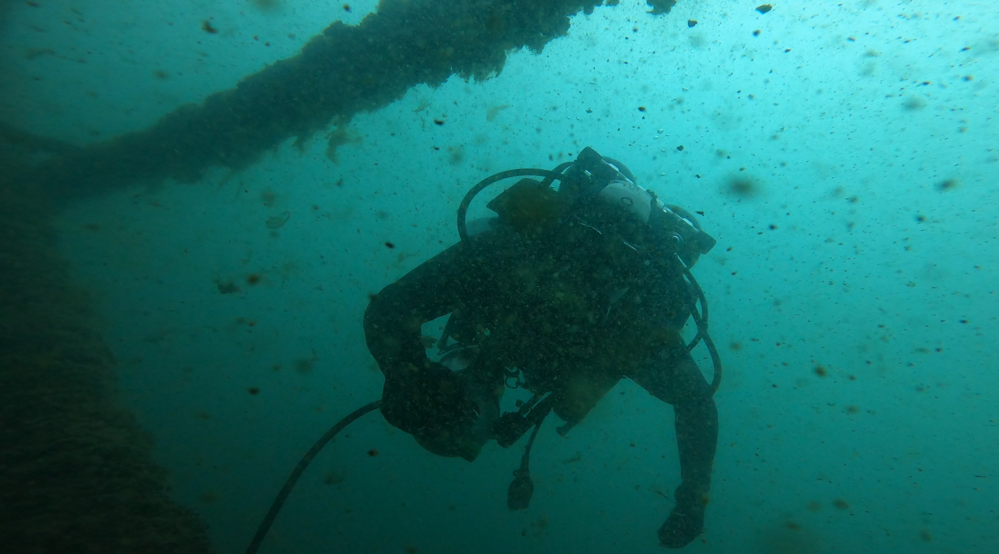
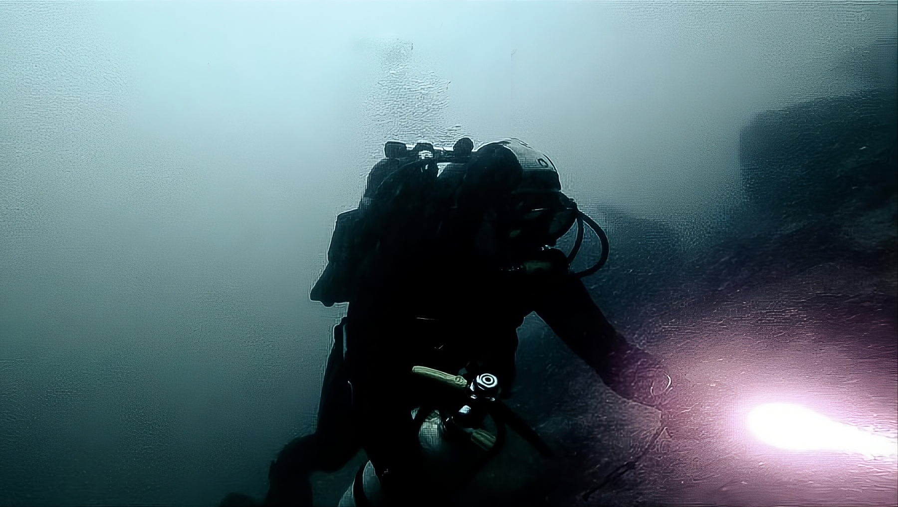

Notfalltaucher · Schweiz · Sofort einsatzbereit Emergency Diver · Switzerland · Ready to deploy
Echte Problemlöser unter Wasser. Bergung, Inspektion, Reparatur, Foto & Video. Bis 40m, auf Anfrage tiefer. A real underwater problem solver. Recovery, inspection, repair, photo & video. To 40m, deeper on request.
Anfrage stellen → Get in touch → Industrietaucher.ch ↗ Industrietaucher.ch ↗Leistungen Services
Jedes Problem unter Wasser ist anders. Wir bringen das Equipment und die Erfahrung, um es zu lösen. Every underwater problem is different. We bring the equipment and experience to solve it.
Verlorene Gegenstände, Werkzeuge, Fahrzeuge, Schmuck — wenn etwas auf den Grund sinkt, holen wir es zurück. Lost objects, tools, vehicles, jewellery — if it sank, We'll bring it back.
Rümpfe, Fundamente, Rohrleitungen, Dämme, Brücken — professionelle Unterwasserinspektion mit Dokumentation. Hulls, foundations, pipelines, dams, bridges — professional underwater inspection with full documentation.
Technische Arbeiten unter Wasser — Abdichtungen, Befestigungen, Installationen ohne Trockendock. Technical underwater work — sealing, fastening, installations without dry dock.
Professionelle Unterwasseraufnahmen für Dokumentation, Medien oder persönliche Projekte. Professional underwater footage for documentation, media, or personal projects.
Suche, Identifikation und Dokumentation von Sprengmitteln und Gefahrstoffen unter Wasser. Vernichtung ziviler Sprengstoffe durch ausgebildeten Sprengmeister. Search, identification and documentation of explosives and hazardous materials underwater. Destruction of civil explosives by certified demolition specialist.
Unterwasser-Drohnen und Sonar-Scanning für präzise Tiefenkartierung und Suche in grossen Gebieten — in Vorbereitung für 2026. Underwater drones and sonar scanning for precise depth mapping and large-area search operations — in preparation for 2026.
Kein Standardfall? Kein Problem. Wir finden eine Lösung — bis 40m, auf Anfrage auch tiefer. Auch schwierige Zugänge sind möglich, z.B. per Seil / Abseilen. Non-standard job? No problem. We find a solution — to 40m, deeper on request. Difficult access points are no obstacle — including rope and abseil entry.
Wer wir sind About
Wir sind kein Rettungsdienst — wir sind Handwerker unter Wasser. Mit technischer Ausbildung, dem richtigen Equipment und Erfahrung in anspruchsvollen Situationen lösen wir Probleme, die andere nicht mal angehen. We're not a rescue diver — we're craftsmen underwater. With technical training, the right equipment, and experience in demanding situations, We solve problems others won't even attempt.
Basiert in Luzern. Einsätze in der ganzen Schweiz und auf Anfrage auch international. Based in Lucerne. Deployments across Switzerland and internationally on request.

Einblicke Gallery




Kontakt Contact
Beschreibt uns die Situation — wir melden uns innert 12 Stunden. Describe the situation — We'll get back to you within 12 hours.
Auch via WhatsApp erreichbar Also reachable via WhatsApp
Referenzen References
Lokalisierung und Bergung eines versunkenen Objekts. Koordination mit dem Auftraggeber vor Ort. Localisation and recovery of a submerged object. On-site coordination with the client.
20–30m · 2025
Visuelle Inspektion und Fotodokumentation einer Unterwasserleitung. Visual inspection and photographic documentation of an underwater pipeline.
15–20m · 2025
Videodokumentation einer Unterwasserstruktur für technische Auswertung. Video documentation of an underwater structure for technical evaluation.
5–10m · 2025
Videodokumentation eines Unterwasserkabels auf 65m Tiefe. Einsatz mit Trimix-Gemisch und technischem Equipment. Video documentation of an underwater cable at 65m depth. Operation with trimix gas mixture and technical equipment.
65m · 2025 · Tiefsteinsatz
Lokalisierung und Bergung verlorener Schlüssel auf dem Seegrund. Vierwaldstättersee, 6m Tiefe. Localisation and recovery of lost keys from the lake bed. Lake Lucerne, 6m depth.
6m · Vierwaldstättersee · 2026
Systematische Suchrasterung eines definierten Gebiets mit Tauchinspektion. Koordination mit Auftraggeber. Systematic grid search of a defined area with dive inspection. Coordination with client.
12–28m · Lungernsee · 2026
* Alle Angaben anonymisiert. Details auf Anfrage. * All details anonymised. Available on request.